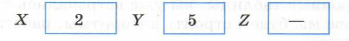
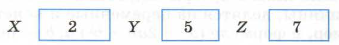
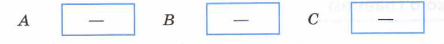

§9
Алгоритм работы с величинами
Основные темы параграфа:
компьютер как исполнитель алгоритмов;
величины: константы и переменные;
система команд;
команда присвоения;
команда ввода;
команда вывода;
вопросы и задания;
коротко о главном;
тест;
Компьютер как исполнитель алгоритмов
Вам уже известно, что всякии алгоритм составляется для конкретного исполнителя.Теперь в качестве исполнителя мы будем рассматривать компьютер, оснащенный системой программирования на определенном языке.
Компьютер-исполнитель работает с определенными данными по определенной программе. Данные — это множество величин.
Величины: константы и переменные
Компьютер работает с информацией, хранящейся в его памяти. Отдельный информационный объект (число, символ, строка, таблица и пр.) называется величиной.
Всякая обрабатываемая программой величина занимает свое место (поле) в памяти компьютера. Значение величины - это информация, хранимая в этом поле памяти.
Существуют три основных типа величин, с которыми работает компьютер: числовой, символьный и логический. Изучая базы данных и электронные таблицы, вы уже встречались с этими типами. В данной главе мы будем строить алгоритмы, работающие с числовыми величинами.
Числовые величины в программировании, так же как и математические величины, делятся на переменные и константы(постоянные). Например, в формуле (а² — 2ab + 5²) а, 6 — переменные, 2 — константа.
Константы записываются в алгоритмах своими десятичными значениями, например: 23, 3.5, 34. Значение константы хранится ввыделенной под нее ячейке памяти и остается неизменным втечение работы программы.
Переменные в программировании, как и в математике, обозначаются символическими именами. Эти имена называют идентификаторами (от глагола «идентифицировать», что значит «обозначать», «символизировать»). Идентификатор может быть одной буквой, множеством букв, сочетанием букв и цифр ит. д. Примеры идентификаторов: А, Х, В3, prim, r25 и т. п.
Система команд
Вам известно, что всякий алгоритм строится исходя из системы команд исполнителя, для которого он предназначен. Любой алгоритм работы с величинами может быть составлен из следующих команд:
присваивание;
ввод;
вывод;
обращение к вспомогательному алгоритму;
цикл;
ветвления.
Эти команды существуют во всех языках, поддерживающих структурное программирование: в Паскале, Си и др.
Команда присваивания
Команда присваивания — одна из основных команд в алгоритмах
работы с величинами. Записывать ее мы будем так:
<переменная>:=<выражения>
Значок «:=» читается «присвоить». Например:
Z:=X+Y
Компьютер сначала вычисляет выражение, затем результат присваивает переменной, стоящей слева от знака «:=».
Если до выполнения этой команды содержимое ячеек, соответствующих переменным X, Y, Z, было таким:

то после выполнения команды оно станет следующим:

Прочерк в ячейке 2 обозначает, что начальное число в ней может быть любым. Оно не имеет значения для результата данной команды. Если слева от знака присваивания стоит числовая переменная, а справа — выражение, определяющее порядок вычисления числовой величины, то такую команду называют арифметической командой присваивания, а выражение — арифметическим выражением.
В частном случае арифметическое выражение в правой части оператора присваивания может быть представлено одной переменной или одной константой. Например:
X:=5
Y:=X
Команда ввода
Значение переменных, являющихся исходными данными решаемой задачи, как правило, задаются вводом.
Команда вводав описаниях алгоритмов выглядит так:
ввод <список переменных>.
Например:
ввод A, B, C
Пользователю удобно, если ввод данных организован в режиме диалога, когда по команде ввода компьютер прерывает выполнение программы и ждет действий пользователя. Пользователь должен набрать на клавиатуре вводимые значения переменных и нажать клавишу <ВВОД>. Введенные значения присвоятся соответствующим переменным из списка ввода, и выполнение программы продолжится.
Вот схема выполнения приведенной выше команды.
1. Память до выполнения команды:

2. Процессор компьютера получил команду ввод А, В, С, прервал свою работу и ждет действий пользователя.
3. Пользователь набирает на клавиатуре:1 3 5
и нажимает клавишу <ВВОД>(«Enter»).
4. Память после выполнения команды:

5. Процессор переходит к выполнению следующей команды программы.
При выполнении пункта 3 вводимые числа должны быть отделены друг от друга какими-нибудь разделителями. Обычно это пробелы.
Из сказанного выше можно сделать вывод:
Переменные величины получают конкретные значения в результате выполнения команды присваивания или команды ввода.
Если переменной величине не присвоено никакого значения (или не введено), то она является неопределенной. Иначе говоря, ничего нельзя сказать о том, какое значение имеет эта переменная.
Команда вывода
Результаты решения задачи сообщаются компьютером пользователю путем выполнениякоманды вывода.
Команда вывода в алгоритмах записывается так:
вывод <список вывода>
Например:
вывод X1, X2
По этой команде значения переменных Х1 и Х2 будут вынесены на устройство вывода (чаще всего это экран).
О других командах, применяемых в алгоритмах работы с величинами, вы узнаете позже.
Любой алгоритм работы с величинами может быть составлен из следующих команд: присваивание; ввод; вывод; обращение к вспомогательному алгоритму; цикл; ветвление.
Программа для компьютера — это алгоритм, записанный на языке программирования.
Язык программирования — это фиксированная система обозначений для описания алгоритмов и структур данных.
Всякая обрабатываемая программой величина занимает определенное поле в памяти компьютера. Значение величины — это информация, хранимая в этом поле.
Переменная величина получает значение в результате выполнения команды присваивания или команды ввода.
Формат команды присваивания:
<переменная>:=<выражение>
Сначала вычисляется выражение, затем полученное значение присваивается переменной.
Ввод — это занесение данных с внешних устройств в оперативную память компьютера. Исходные данные для решения задачи обычно задаются вводом.
Результаты решения задачи выносятся на устройства вывода (монитор, принтер) по команде вывода.
Вопросы и задания
1. Что такое величина? Чем отличаются переменные и постоянные величины?
2. Чем определяется значение величины?
3. Какие существуют основные типы величин в программировании?
4. Как записывается команда присваивания?
5. Что такое ввод? Как записывается команда ввода?
6. Что такое вывод? Как записывается команда вывода?
7. В схематическом виде (как это сделано в параграфе) отразите изменения значений в ячейках, соответствующих переменным А и В, в ходе последовательного выполнения команд присваивания:

8. Вместо многоточия впишите в алгоритм несколько команд присваивания, в результате чего должен получиться алгоритм возведения в четвертую степень введенного числа (дополнительные переменные не использовать):
ввод A . . . вывод A
Тест